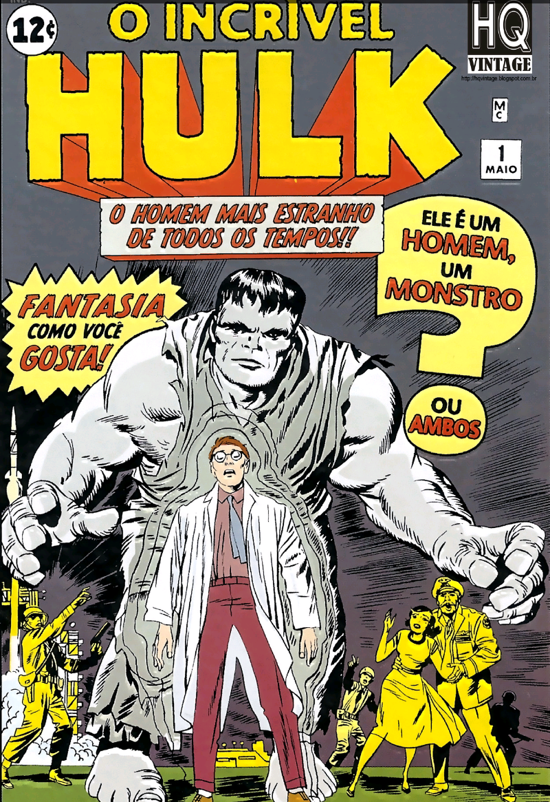
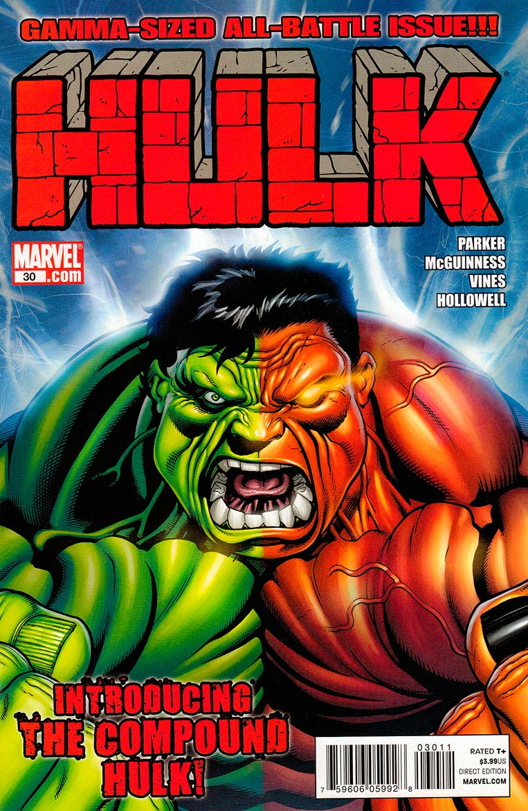
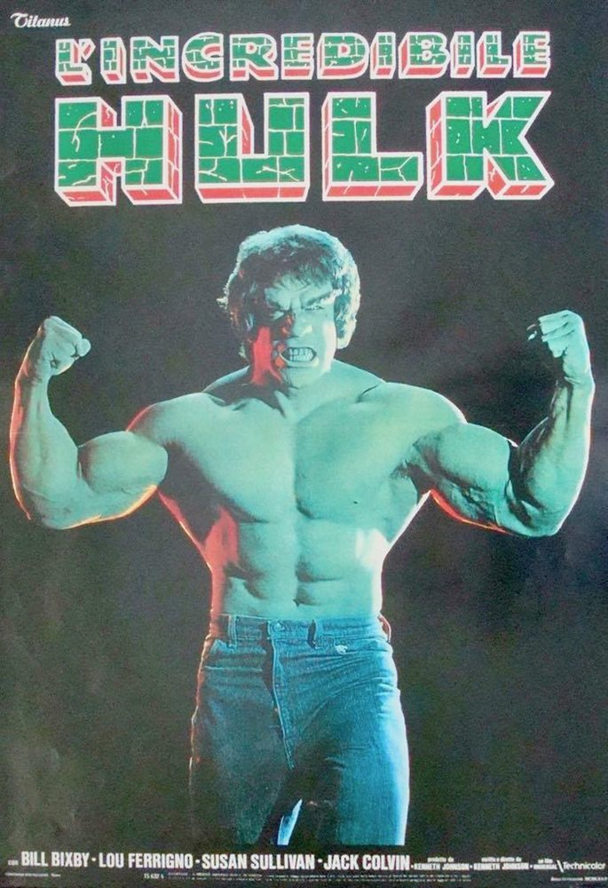

O Hulk, por vezes referido como O Incrível Hulk (The Incredible Hulk, no original em inglês) é um personagem de quadrinhos/banda desenhada do gênero super-herói, propriedade da Marvel Comics, editora pela qual as histórias do personagem são publicados desde sua criação, nos anos 1960.
Concebido pelo roteirista Stan Lee (1922-2018) e pelo desenhista Jack Kirby (1917-1994), teve sua primeira aparição junto ao público original dos Estados Unidos na revista The Incredible Hulk n°1, lançada no mercado americano pela Marvel Comics em maio de 1962, um título solo do personagem, garantindo-lhe o acesso ao que mais tarde seria popularmente conhecido como Universo Marvel dos quadrinhos/banda desenhada. A partir de então, o Hulk tem aparecido, protagonizando ou não, diversas histórias da editora, se tornando um dos mais visualmente reconhecíveis da mesma, tendo o universo entorno do personagem se expandido continuadamente ao longo das últimas décadas.
Na história original dos quadrinhos, o Hulk é um selvagem e poderoso alter ego do Dr. Robert Bruce Banner, um cientista que foi atingido por raios gama enquanto salvava um adolescente durante o teste militar de uma bomba por ele desenvolvida. Este adolescente, Rick Jones, tornou-se companheiro de Banner, ajudando-o a manter o Hulk sob controle e mantê-lo longe dos ataques dos militares, que viam a criatura como uma ameaça.
Ao invés de padecer pela radiação, o cientista foi condenado a uma vida compartilhada com o seu lado mais obscuro, o também chamado golias verde. Originalmente, a cor do personagem era cinza, mas, por problemas na hora da impressão dos quadrinhos (a gráfica não conseguia acertar a tonalidade), ele apareceu num tom esverdeado, fazendo com que o Hulk passasse a ser o "Gigante Esmeralda" que conhecemos desde o início.
Robert Bruce Banner era o filho do Dr. Brian Banner, um cientista atômico, e sua esposa Rebecca. Embora Rebecca amasse profundamente Bruce, que retribuiu o carinho, Brian odiava o filho. Alcoólatra, Brian Banner foi levado por um ciúme insano por Bruce, por ele ser objeto do amor de Rebecca. Além disso, Brian acreditava que seu trabalho com radiação tinha alterado o seu DNA e lhe deu um filho mutante. Ele finalmente assassinou Rebecca e foi colocado em um hospital psiquiátrico. Bruce, um grande e jovem intelectual, foi criado por sua tia, a senhora Drake, e internalizou sua grande dor e raiva sobre os sofrimentos de sua infância. Bruce mais tarde frequentou a faculdade onde conheceu Tony Stark, com quem iniciou uma grande amizade e também uma rivalidade.
Antes de testar a Bomba Gama, Bruce estava em uma reunião com os militares explicando o que poderia ser tirado de proveito da Bomba Gama, destacando que ela poderia iniciar uma era de paz e harmonia. Porém, o general Ross estava ignorando o que Bruce estava dizendo e queria apenas saber se bomba teria serventia como arma. Enquanto questionava-o, Tony Stark chegou e garantiu que o invento de Bruce estava perfeito, porém que não tinha a potência para ser uma arma. Ross e os outros militares presentes se enfureceram e questionaram Bruce acerca disso. Bruce disse que o seu objetivo não é usar a radiação gama para destruir, mas sim usá-la para curar doenças. Tony caçoou do que Bruce disse, e isso fez os dois iniciarem uma discussão. Mais tarde, em um quarto de um hotel onde Tony está hospedado, ele pediu a Bruce permissão para fazer melhorias na Bomba Gama, o que Bruce não quis. Após terem discutido, Bruce deixa o quarto e Tony, sem Bruce saber, faz algumas alterações na Bomba Gama, que a fariam atingir o potencial para ser uma arma.
Bruce estava presente no bunker de instrumentação na unidade de teste para o primeiro teste de detonação subterrânea da Bomba Gama. Observando que um civil violou a segurança e entrou na área de teste limitado, Bruce pede ao colega Igor Starsky para atrasar a contagem regressiva quando ele tentou salvar o civil. Starsky, secretamente um agente soviético, não fez nada, confiante de que Bruce morresse na explosão, e que o projeto seria interrompido. Ao chegar no local de teste, Bruce conhece um adolescente chamado Rick Jones, ele o joga em uma trincheira protetora. Antes de Bruce poder ficar a salvo, a bomba detona e intensas ondas de radiação atingem a superfície. Banner é irradiado com partículas carregadas de alta radioatividade. Devido a um fator genético desconhecido em seu corpo, ele não foi morto pela radiação, que em vez disso fez com que ele frequentemente se transforme no monstro humanóide chamado de Hulk pelos militares.
A terceira ressurreição consecutiva do Hulk veio pelas mãos do Desafiador, um Ancião do Universo exilado que retornou para uma revanche contra o Grão-Mestre. Ele relatou a raiva do Hulk e o trouxe de volta à vida para atuar como seu ás na manga durante a rodada final de uma disputa entre cada uma das equipes dos Anciões, a Ordem Negra e a Legião Letal, cujo objetivo tinha sido o de capturar as pirâmides implantadas na Terra por seus mestres durante cada rodada. O Hulk concordou em ajudar o Desafiador a recuperar a pirâmide final, já que a Terra seria destruída assim que a competição terminasse, e o Hulk viu isso como uma maneira de se libertar do incômodo da humanidade. À esta altura, a persona de Bruce Banner, que tinha sido esmagada pela psique do Hulk, chegou à conclusão de que esta sucessão de ressurreições não era uma coincidência, mas simplesmente uma manifestação da imortalidade inata do Hulk.
Pouco depois, o Hulk voltou a ser Bruce Banner. Banner sentiu remorso por ferir seus companheiros heróis, enquanto na persona do Hulk, e foi aconselhado por Edwin Jarvis a não deixar suas ações passadas impedirem-no de fazer o bem para o mundo. Quando Banner soube que o Desafiador tinha vindo à Terra para destruí-la, ele se transformou no Hulk e o confrontou por trazê-lo de volta da morte e por não deixá-lo sozinho. Depois que o Hulk bateu duramente no Desafiador, este atingiu o Hulk com força suficiente para mandá-lo voando em órbita por se atrever a machucá-lo. Apesar disso, o Hulk simplesmente riu do fato de que ele tinha conseguido ferir o Desafiador.
Bruce Banner foi retratado de maneiras diferentes por diferentes roteiristas das HQs, mas temas comuns persistem. Banner, um gênio, é sarcástico e aparentemente muito autoconfiante quando ele aparece pela primeira vez em The Incredible Hulk # 1, de 1962 (em que o personagem apareceu pela primeira vez), mas também é emocionalmente retraído na maioria dos seus hábitos. Banner desenhou a bomba de raios gama que causou sua aflição, e por ironia do seu destino, ele é autoinfligido; e tem sido um dos temas mais comuns e persistentes. Arie Kaplan descreve o personagem assim: "Bruce Banner vive em um constante estado de pânico, sempre desconfiado de que o monstro dentro dele vai surgir, e, portanto, ele não pode formar ligações significativas com ninguém ". Ao longo das histórias publicadas do Hulk, os escritores têm continuado a enquadrar Bruce Banner nestes temas. Sob diferentes roteiristas, a sua personalidade fraturada levou a transformações em diferentes versões do Hulk. Essas transformações são geralmente involuntárias, e os autores muitas vezes ter amarrado a transformação para gatilhos emocionais, como raiva e medo. Conforme a série foi progredindo, diferentes roteiristas se adaptaram ao Hulk, mudando a personalidade do Hulk para refletir as mudanças na fisiologia ou na psique de Banner. Ao longo das últimas décadas em que o personagem alcançou sucesso mundial, diversos roteiristas também refinaram e mudaram alguns aspectos da personalidade de Banner, mostrando-lhe como emocionalmente reprimido, extremamente retraído e tímido, mas capaz de ter um profundo amor por Betty Ross, e para resolver problemas colocados para ele. Sob a escrita do quadrinista Paul Jenkins, Banner mostrou-se um fugitivo competente, aplicando o raciocínio dedutivo e observação para descobrir os eventos que transpiram em torno dele.
Nas ocasiões em que Banner tem controlado o corpo do Hulk, ele tem aplicado os princípios da física aos problemas e desafios e usado o raciocínio dedutivo. Foi mostrado depois que sua capacidade de se transformar no Hulk foi levado pelo Hulk Vermelho essa e Banner tem sido extremamente versátil, bem como astuto ao lidar com as muitas situações que se seguiram.
Durante a detonação experimental de uma bomba gama, o cientista Bruce Banner corre para salvar um adolescente que levou para o campo de testes. Empurrando o adolescente, Rick Jones, em uma trincheira, Banner é pego na explosão, absorvendo grandes quantidades de radiação. Ele acorda mais tarde, em uma enfermaria, parecendo relativamente ileso, mas naquela noite se transforma em uma forma cinza pesada que rompe a parede e escapa. Um soldado do grupo de busca que seguiu a criatura não identificada, chamou-a de "Hulk".
A versão original do Hulk foi muitas vezes apresentada de forma simples e rápida com raiva. Suas primeiras transformações foram desencadeadas por causa do sol, e seu retorno se iniciava de madrugada. No entanto, em The Incredible Hulk # 4, Banner começou a usar um dispositivo de raios gama para se transformar à vontade. Nas histórias do Hulk mais recentes, as emoções desencadeavam a mudança. Apesar de ser cinza em sua estreia, as dificuldades com a impressora levaram a uma mudança de sua cor para verde. No conto original, o Hulk se divorcia de sua identidade a partir de Banner, condenando Banner como "o fraco mais fraco na imagem."
A partir de suas primeiras histórias, o Hulk tem se preocupado em encontrar refúgio e sossego, e, muitas vezes é mostrado reagindo emocionalmente a muitas situações rapidamente. Grest e Weinberg chamaram Hulk de "o lado negro primordial da psique [Banner]". Mesmo nas primeiras aparições, Hulk falou na terceira pessoa. O Hulk mantém uma inteligência modesta, pensando e falando em frases completas, e Lee ainda dá o diálogo expositivo de Hulk na edição de seis anos, permitindo que os leitores aprendam os recursos que o Hulk tem, quando o Hulk diz: "Mas estes músculos não são apenas para serem mostrados! Tudo que eu tenho que fazer é saltar acima e me manter apenas indo!" Em Marvel: Cinco Décadas Fabulosas das Maiores Histórias em Quadrinhos do Mundo, Les Daniels aborda o Hulk como uma encarnação dos medos culturais da radiação e da ciência nuclear. Ele cita Jack Kirby assim: "Enquanto nós estamos experimentando a radioatividade, não há como dizer o que pode acontecer, ou o quanto os nossos avanços pode custar-nos." Daniels continua: "O Hulk tornou-se a mais perturbadora personificação da Marvel dos perigos inerentes à era atômica".
Quanto mais bravo, mais forte o Hulk fica
Força Ilimitada: a força do Hulk não "possui um limite estabelecido", atingindo níveis inacreditáveis. Com ela, pode pular enormes distâncias com um único impulso de seus membros, e usar as mãos para fazer uma palmada sônica — um bater de palmas usado por Hulk, causando fortes ondas sonoras e ventos, e pode erguer um peso ilimitado de força. Sua força cresce após o aumento de adrenalina no seu sistema circulatório. Nos quadrinhos, ele foi capaz de destruir um asteroide com duas vezes o tamanho da Terra, um de seus feitos mais famosos foi em Guerras Secretas onde ele consegue segurar uma montanha de 150 bilhões de toneladas jogada sobre ele pelo Homem Molecular, ele também conseguiu juntar as placas tectônicas do Planeta Sakaar sob altas temperaturas na saga Planeta Hulk. Outro de seus grandes feitos de força acontece quando uma esfera de Matéria e antimatéria estavam para se fundir, e com isso ameaçando a destruição da Terra, o Hulk com sua força impede-as de se unirem, segundo o próprio Homem Aranha aquele era um feito fisicamente impossível. A mais recente amostra de sua força se passa quando, ao enfrentar Corvus Glaive na saga Infinito, ele obriga o Gigante Esmeralda a suportar o peso de uma estrela que, segundo o mesmo, era um Sol em plena vida.
Resistência Sobre-Humana: Por ter um organismo modificado e uma pele densa e resistente, pode sobreviver em locais com baixos índices de oxigênio. O Hulk também já resistiu a uma Supernova sem sofrer queimaduras.
Velocidade Sobre-Humana: Independentemente de seu tamanho, as pernas fortes do Hulk o permitem correr em velocidades que estão bem além dos limites físicos naturais até mesmo do melhor atleta humano. A velocidade do Hulk é tão relativamente alta que, enquanto criava túneis subterrâneos de Subterrânea até a Califórnia, os Vingadores temiam que o Hulk poderia fraturar a falha geológica de San Andreas, em questão de horas. O Hulk uma vez girou como um tornado a uma velocidade incrível para afastar o Sr. Fantástico. Em uma notória demonstração de velocidade, o Hulk pode até mesmo ultrapassar uma aeronave enquanto corria em terra. A velocidade astronômica de Hulk se estende aos seus saltos, o que lhe permitiu seguir e alcançar um míssil espacial. O Hulk também possui imensa velocidade de nado também. Ele foi cronometrado estar nadando a 150 km/h, e até mesmo se igualou a velocidade de Namor debaixo d'água, até mesmo quando Namor estava movendo-se a velocidades suficientes para criar um redemoinho, para a surpresa do rei Atlante. Referindo-se a velocidade formidável do Hulk, Banner ponderou que o Hulk é capaz de correr a velocidades que o olho não pode acompanhar e nadar rápido o suficiente para criar propulsão. O Hulk demonstrou ser rápido o suficiente para capturar projeteis de morteiros e mísseis disparados contra ele. O Hulk também foi eventualmente reconhecido por ser extremamente ágil de maneira proporcional ao seu tamanho. Seus reflexos até mesmo foram descritos como "reflexos ultra-rápidos". Mais exemplos de seu incrível tempo de reação incluem perseguir e tocar o Surfista Prateado, enquanto ele estava em altas velocidades, acertar o Homem-Aranha, apesar dos incríveis reflexos de Peter, e facilmente desviar de balas e torpedos de uma curta distância
Vígor Super-Humano: O Hulk é capaz de lutar por dias sem parar, ou mesmo nadar e correr por uma boa quantidade de tempo.
Salto Sobre-Humano: O Hulk é capaz de usar seus músculos da perna altamente desenvolvidos para saltar grandes distâncias. Quando o Hulk fica enfurecido, sua força aumenta consideravelmente, o que significa que ele pode saltar mais longe do que o habitual. O Hulk atravessou 1.600 km com um único salto, ele pulou em cima do Monte Olimpo do nível do solo. Em mais de uma ocasião, o Hulk quase pulou na órbita da Terra.